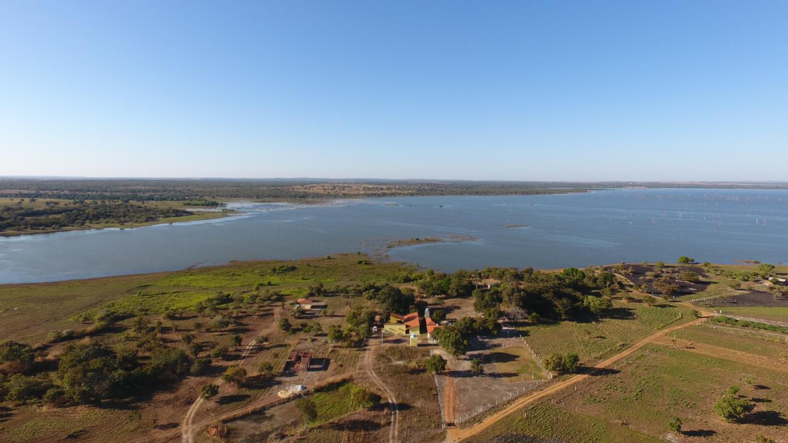

Lago Taboca
Criado para a irrigação do Projeto Rio Formoso, tornou-se ponto famoso para a pesca de tucunaré, pirarucu, pintado, aruanã, etc.
Localização Rural Lago Taboca, - Rural CEP 77.470-000 - Formoso do Araguaia - TO Pontos de Referência Acesso pela rodovia TO 040 entrando no km 318, seguindo por 6km de tras estrada de terra. Horário de Funcionamento Segunda, Terça, Quarta, Quinta, Sexta, Sábado, Domingo, Feriado: 08:00 - 18:00 Tipo de Visita Guiada; Entrada Franca Atividades Realizadas Pesca, observação de pássaros, beleza cênica.